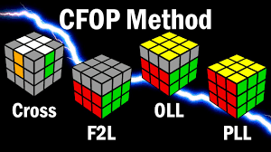
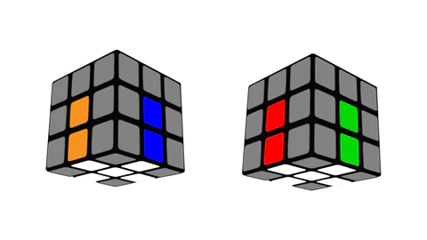
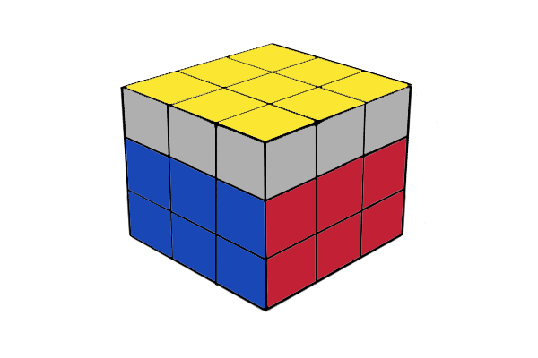
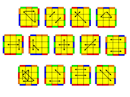

How to Solve a
Rubik's Cube
Intermediate/CFOP Method

The Intermediate or CFOP method divides the puzzle into layers and you have to solve the cube layer by layer using algorithms in each step, not messing up the pieces already in place. These steps are the following:
As seen in the illustration.
Cross

Just like the Beginner's Method, we first have to solve the white edge pieces in the bottom. This seems to be the easiest but it's really hard if you want to do it right. You should be able to determine all the rotations needed to complete the white cross after inspecting the cube, and you'll succeed only if you foresee 7 steps. Learn more on
ways to solve white cross faster.
First Two Layers (F2L)

When the cross is done we solve the first two layers (F2L) in one step using a technique to pair the white corner and second layer edge pieces. We are talking about four corner blocks which usually require 4x7 steps. There are many, many algorithms to do so, thus check out
algorithms for completing F2L.
Orienting the Last Layer (OLL)

Orienting the last layer (OLL) of the Rubik's Cube is the step in which we solve the yellow face without matching the side colors. We are going to position them in the next step. There are 57 different algorithms to do this step as fast as possible, so check out
all 57 OLL algorithms.
Permutate Last Layer (PLL)

Now it is time to permutate the final layer and complete the solution. This just entails moving the remaining pieces to their final locations. Once agin their are many, many algorithms for every possible scenario, as seen in the image, so check out
all 21 PLL algorithms.